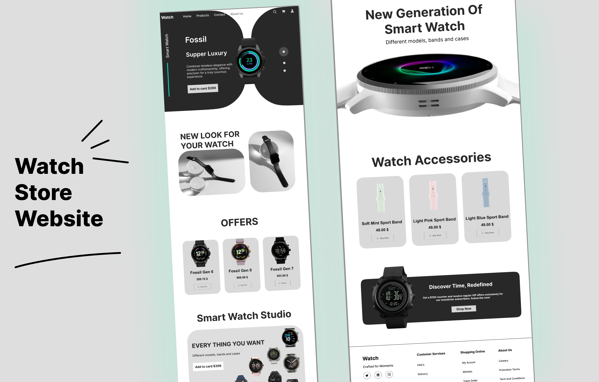
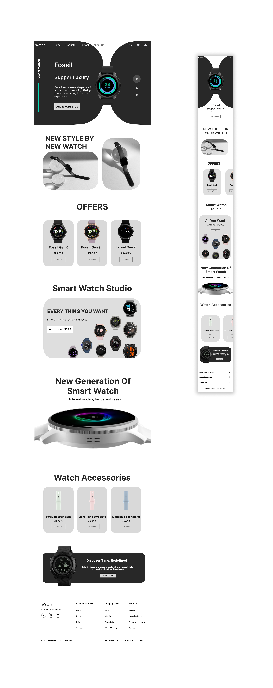

Minimal
Watch Store

A minimal, premium e-commerce experience for luxury and smart watch buyers. The focus is clarity, trust signals, and an elegant product presentation that encourages confident purchase decisions.
Overview
Design a trustworthy, minimal storefront that emphasizes product craftsmanship and makes purchasing a luxury watch feel effortless and secure.
Primary Goal
Increase user trust and conversion by simplifying product information and emphasizing craftsmanship, warranty, and transparent pricing.
Success Metrics
↑ Time on productTarget +20s
My Role
End-to-end product & visual design: research, UX flows, wireframes, high-fidelity UI, and prototype handoff.
Research & Insights
To understand why luxury watch sites often feel cluttered and untrustworthy, I analyzed competitor stores and conducted quick moderated interviews with 6 potential buyers.
Key findings:

- Information overload: product pages show too many competing CTAs and tech specs.
- Trust is earned by clarity: users wanted clear warranties, returns, and authenticity badges.
- Visual hierarchy matters: large product imagery with restrained UI increases perceived value.
- Mobile-first browsing: many users begin on mobile and expect a condensed, clear path to buy.
Primary Persona

James Carter
Age 38 — Tech Executive
James values quality, provenance, and a seamless purchase process. He shops less frequently but pays premium for trusted craftsmanship. He expects clear product photography, warranty details, and discreet UI that honors the product.
Goals & Needs
- Goal: Buy a watch that symbolizes success and reliability.
- Need: Clear reassurance of authenticity, warranty and simple returns.
- Behavior: Reads product descriptions, compares finishes, and needs quick access to reviews & guarantees.
Pain Points
- Overwhelming product pages with distracting promotions.
- Unclear warranty and aftercare information.
- Trust signals buried or unclear (no authenticity badges, unclear seller info).
Design Implications
- Simplify content hierarchy — hero product + one main CTA.
- Surface trust elements early: badges, warranty, curated customer reviews.
- Use refined spacing, premium typography, and large product images to communicate value.
User Journey
James wants to quickly evaluate product quality and decide with confidence. Below is a condensed journey mapping his experience from discovery to purchase.
DiscoverSocial / Search → Landing
EvaluateHero image, specs, gallery
TrustWarranty, reviews, authenticity
DecideAdd to cart → Checkout
UX Flow & Key Screens
The flow below focuses on a single-task funnel: discovery → product detail → trust proofing → checkout.
Home / Landing
Hero with large product shot, curated collections, clear navigation, minimal copy.
Collection
Grid with tasteful spacing and card focus on craftsmanship; quick filters (material, price).
Product Detail
Primary CTA, large imagery, gallery, key specs, warranty & authenticity badges, one action at a time.
Checkout
Streamlined form, trust microcopy, payment options, and order summary emphasizing return policy.
Wireframes — Desktop & Mobile
Low-fidelity explorations that establish hierarchy and spacing before visual polish.
High-Fidelity UI
Final visual system focused on premium typography, restrained color accents, and immersive product imagery.

Design System Highlights
TypographySerif/Neutral pairing — large product headlines + refined body copy
ColorMuted neutrals + single accent gradient to imply premium feel
ComponentsProduct card, trust badges, adjustable CTA states, and elevated hero containers
UI Kit
Re-usable elements to ensure a consistent, elegant brand experience across the store.
Accessibility & Performance
Accessibility and perceived performance are critical for trust. Priorities for implementation:
- Images: Serve optimized images (WebP), descriptive alt text, and progressive loading for fast perceived paint.
- Contrast & Focus: Maintain accessible contrast for body text; visible focus states for keyboard navigation.
- Trust Enhancements: Use structured data for product schema, clear returns & warranty content, and SSL/third-party authentications.
Reflection
Simplifying the decision process amplified the product’s perceived value. By removing competing CTAs and prioritizing trust signals (authenticity badges, warranty, and curated imagery), users can more easily focus on the craftsmanship — which strengthens confidence and increases conversion intent.